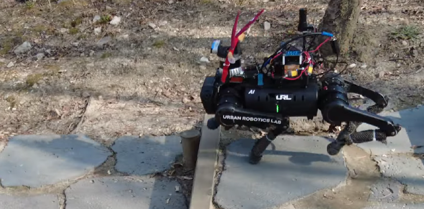
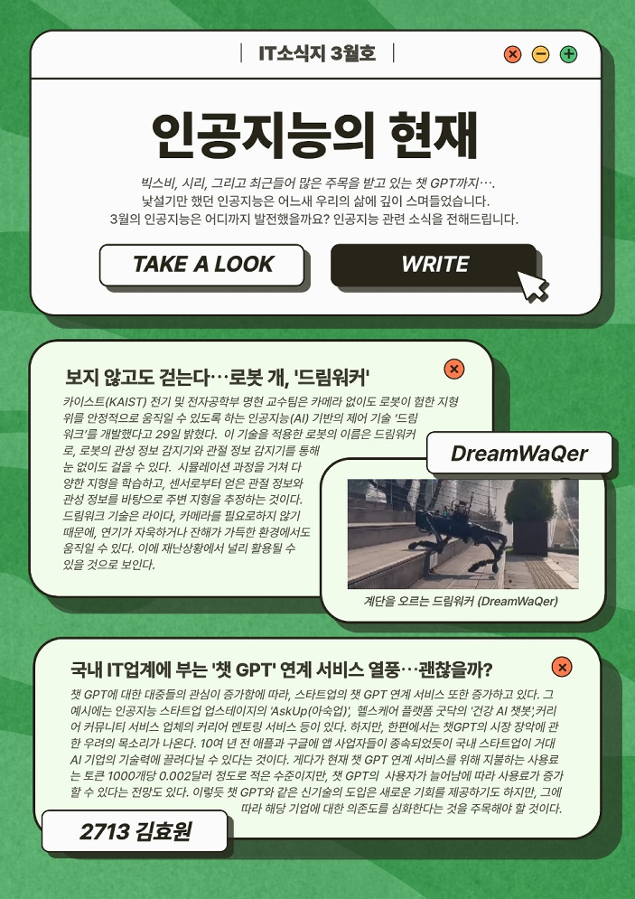

- MAR
- APR
- MAY
- JUN
- JUL
- AUG
- SEP
- OCT
- NOV
- DEC
- JAN
IT소식지 3월호 - 인공지능의 현재
빅스비, 시리, 그리고 최근들어 많은 주목을 받고 있는 챗GPT까지⋯.
낯설기만 했던 인공지능은 어느새 우리의 삶에 깊이 스며들었습니다.
3월의 인공지능은 어디까지 발전했을까요?
인공지능 관련 소식을 전해드립니다.
보지 않고도 걷는다⋯ 로봇 개, '드림워커'

(계단을 내려가는 드림워커)
카이스트(KAIST) 전기 및 전자공학부 명현 교수팀은 로봇이 카메라 없이도
험한 지형 위를 안정적으로 움직일 수 있도록 하는 인공지능(AI) 기반의 제어 기술
‘드림워크’를 개발했다고 29일 밝혔다.
이 기술을 적용한 로봇의 이름은 드림워커로, 로봇의 관성 정보 감지기와
관절 정보 감지기를 통해 눈 없이도 걸을 수 있다.
시뮬레이션 과정을 거쳐 다양한 지형을 학습하고, 센서로부터 얻은
관절 정보와 관성 정보를 바탕으로 주변 지형을 추정하는 것이다.
드림워크 기술은 라이다, 카메라가 필요하지 않으므로
연기가 자욱하거나 잔해가 가득한 환경에서도 움직일 수 있다.
이에 재난상황에서 널리 활용될 수 있을 것으로 기대된다.
국내 IT업계에 부는 '챗 GPT' 연계 서비스 열풍⋯괜찮을까?
챗 GPT에 대한 대중들의 관심이 증가함에 따라, 스타트업의 챗 GPT 연계 서비스 또한 증가하고 있다.
그 예시에는 인공지능 스타트업 업스테이지의 'AskUp(아숙업)', 헬스케어 플랫폼 굿닥의 '건강 AI 챗봇,
커리어 커뮤니티 서비스 업체의 커리어 멘토링 서비스 등이 있다.
하지만, 한편에서는 챗GPT의 시장 장악에 관한 우려의 목소리가 나온다.
10여 년 전 애플과 구글에 앱 사업자들이 종속되었듯이
국내 스타트업이 거대 AI 기업의 기술력에 끌려다닐 수 있다는 것이다.
게다가 현재 챗 GPT 연계 서비스를 위해 지불하는 사용료는
토큰 1000개당 0.002달러 정도로 적은 수준이지만,
챗 GPT의 사용자가 늘어남에 따라 사용료가 증가할 수 있다는 전망도 있다.
이렇듯 챗 GPT와 같은 신기술의 도입은 새로운 기회를 제공하기도 하지만,
그에 따라 해당 기업에 대한 의존도를 심화한다는 것을 주목해야 할 것이다.
